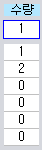
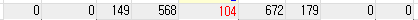
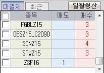
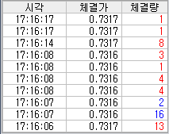
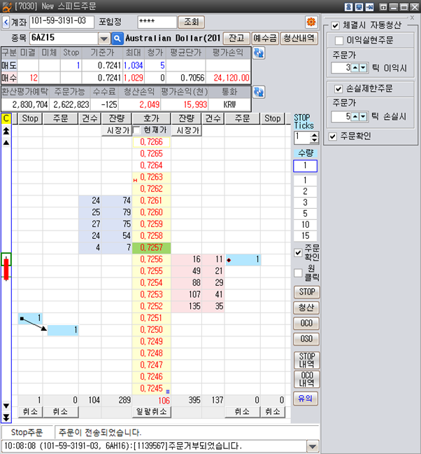
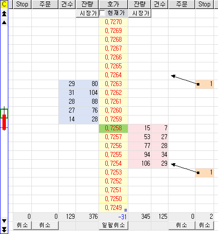

[7030]New 스피드주문
강력한 특화주문(체결 시 자동청산/OCO/OSO) 을 탑재한 스피드주문 화면입니다.
* Stop/LIT 주문(PC 기반)이란?
1. STOP 주문
- 현재가를 기준으로 사용자가 정의한 가격이 되면 원하는 가격으로 주문을 전송하는 주문입니다.
- 예를 들어, 위의 그림에서의 매수 주문은 현재가가 0.7261이 되었을 때 0.7264로 주문을 내서 바로 체결이 될 수 있게 하는 매수STOP주문 입니다.
매도 주문은 현재가가 아래로 내려와 0.7254가 되었을 때 0.7251로 주문을 내어서 바로 체결이 될 수 있게 하는 매도STOP주문 입니다.
2. LIT 주문 ( Limit if Touched )
- STOP에서 매도 주문일 때는 현재가가 아래로 내려갈 때 가격을 확인하여 주문이 나가고 매수 주문일 때는 현재가가 위로 올라갈 때 가격을 확인하여 주문이 전송됩니다.
- LIT주문은 반대 개념으로 현재가가 아래로 내려갈 때 가격을 확인하여 매수 주문을 전송합니다. 그리고 현재가가 위로 올라갈 때 가격을 확인하여 매도 주문을 냅니다.
- 예를 들어, 위의 그림처럼 매도 STOP을 낸 경우에는 현재가가 위로 올라가서 0.7264가 되면 0.7261로 주문이 나가게 됩니다. 그리고 매수 STOP의 경우에는 현재가가 아래로 내려가서 0.7252가 되었을 때 0.7255로 매수 주문이 나갑니다.
3. 주문영역
- 빨간색 영역 : STOP Limit Order
- 파란색 영역 : STOP LIT Order
- 주문창에서 STOP을 낼 때 현재가와 주문종류에 따라서 자동으로 주문형태를 분류해 줍니다.
4. 유의사항
※ 해외선물옵션 거래시, 아래의 사유 등으로 인해 시세 및 주문의 지연 또는 주문접수 거부가
발생할 수 있으니 유의하시기 바랍니다.
- 사용자 PC환경, 통신회선 및 네트워크 장애
- 해외 네트워크 및 거래소 문제 등
- 해외 주요지표 및 뉴스 발생 시, 시세급변 및 주문폭주 등
※ 해당 화면에서의 주문의 특징은 아래와 같으니 유의하시기 바랍니다.
- DAY주문만 가능
- 해외옵션 종목은 거래소STOP주문 불가
- 본 화면 주문 시, 해외옵션 행사 예약 주문 불가
※ 거래소 STOP 및 STOP/체결 시 자동청산/OCO/OSO주문 시스템을 사용하기 위해서는
하단 유의사항을 반드시 숙지한 후 사용하시기 바랍니다.
1. 거래소 STOP/STOP Limit 주문: 거래소에서 제공하는 주문유형으로 프로그램 종료 시에도
작동됩니다.
2. STOP 주문: HTS 프로그램이 실행된 상태에서만 작동하는 PC기반의 주문
3. STOP/체결 시 자동청산/OCO/OSO 주문 시 유의사항
- HTS가 실행된 상태에서만 작동되며 HTS 종료 시 모두 취소처리 됩니다.
단, 계좌번호 및 종목변경, 화면종료 시에도 설정된 주문은 작동되므로 반드시 미체결
내역을 확인하시기 바랍니다.
- 입력한 조건 도달 시 스탑로스 주문이 일단 한번 실행될 경우, 다시 조건이 포착되더라도
재실행되지 않습니다.
- 입력한 조건 도달 시 시장 및 계좌상태에 따라 체결되지 않거나 주문이 거부될 수 있으니,
주문내역을 재확인하시기 바랍니다.
- 종목호가의 급변동/누락 등의 사유 발생시 주문처리가 원활치 않을 수 있습니다.
- 체결 시 자동청산/OCO/OSO 주문에서 발생한 미체결 상태의 주문의 경우,
HTS를 재시작하게 되면 체결 시 자동청산/OCO/OSO 주문의 성격은 사라지고
기존 미체결 내역으로만 남아있습니다.
- 본 화면에서 실행한 STOP/체결 시 자동청산/OCO/OSO 주문 등은 동일한 화면을
복수로 실행하거나 (7006)다계좌단종목 스피드주문을 비롯한 다른 주문화면에서도
조회됩니다. 따라서 실제 주문을 실행한 주문화면이 아닌 다른 주문화면에서도 주문을
변경/취소할 수 있으므로 유의하시기 바랍니다.
- 현재가에서 실행되지 않습니다.
1.계좌 / 비밀번호 입력 : 주문하고자 하는 계좌와 비밀번호를 입력합니다.
2.주문하고자 하는 종목의 코드를 입력합니다. 오른쪽 돋보기 모양을 누른 후, 원하는 종목과 거래월물을 선택할 수 있습니다.
3.포지션 정보 : 현재 계좌가 보유하고 있는 수량과 미체결 수량 등을 조회합니다.
A. 조회버튼 : 최대, 청산 가능수량을 조회합니다.
B.미결 : 선택된 계좌의 미결제 수량(실시간)
C.미체 : 선택된 계좌의 미체결 수량(실시간)
D.STOP : 선택된 계좌에 걸려있는 PC기반의 STOP 주문수량(실시간)
E.기준가 : 최대수량, 청산수량을 계산하기 위한 가격
F.최대 : 최대주문가능수량(조회)
G.청가 : 청산가능수량(조회)
H.평균단가 : 포지션의 평균단가(실시간)
I.평가손익 : 현재가와 평균단가의 차이만큼의 손실 또는 이익(실시간)
- 평가손익은 합산한 미결제수량의 평균단가로 계산한 값으로 실제 평가손익과
다르게 표시될 수 있으며 이 경우, 조회 버튼을 눌러 조회 후 확인하시기 바랍니다.
4.평가예탁금 정보 : 조회시점의 평가예탁금 등 원화로 환산하여 조회합니다.
- (1315)예탁자산현황에서 조회되는 내용을 확인할 수 있습니다.
5.주문판
A.호가가격 표시 열
i.현재가 : 녹색
ii.시가 : 호가 앞에 녹색 동그라미(O)
iii.고가 : 호가 앞에 빨강색 H
iv.저가 : 호가 앞에 파랑색 L
v.현재 평균단가
- 매수 : 호가 앞에 빨강색
- 매도 : 호가 앞에 파랑색
vi.고가와 저가 사이 : 옅은 노랑색
vii.정산가 : 검정색 테두리
B.기타열
i.잔량열 : 잔량표시
ii.건수열 : 건수표시
iii.주문열 : 주문수량 표시
iv.STOP열 : PC 기반의 STOP 주문 수량 표시
C.STOP Ticks
PC기반의 STOP 주문 시 사용되는 Tick 칸수
ex) +2 STOP가격 2틱 매수는 위로 주문, 매도는 아래로 주문
-3 STOP가격 3틱 매수는 아래로 주문, 매도는 위로 주문
D.수량

- 파란박스 안에 있는 수량만큼 주문 시 전송됩니다.
- 아래 칸에는 자주 쓰는 수량을 편집하여 사용할 수 있으며, 해당 칸 클릭 시
해당 칸의 수량이 파란박스 안에 입력됩니다.
E.주문옵션
i.주문확인 : 주문 시 주문확인창을 팝업시켜 주문 내역 확인이 가능합니다.
- 일반주문, 서버스탑주문 : 신규, 정정, 취소 확인
- OCO/OSO/체결 시 자동청산 : 신규주문
- PC 기반의 STOP : 주문확인창 뜨지 않고 바로 주문접수
ii.원클릭: 주문 열에 한번 클릭 시 주문이 전송됩니다.
F.주문 열 주문
- 주문 열에 클릭 시, 지정가로 주문이 접수됩니다.
- 거래소 STOP/STOP LIMIT 주문은 매수/매도 주문열에서 접수됩니다.(별도설명)
G.STOP 열 주문
- STOP 열에 클릭 시, 설정된 STOP Ticks에 맞게 STOP 주문이 접수됩니다.
- 현재가가 주문을 접수해 둔 STOP 가격에 도달하면 주문가격은 STOP Ticks만큼
위 또는 아래로 실행됩니다.
ex)+2 STOP가격 2틱 매수는 위로 주문, 매도는 아래로 주문
-3 STOP가격 3틱 매수는 아래로 주문, 매도는 위로 주문
H.시장가
매수열의 시장가 버튼 클릭 시 매수 시장가, 매도열의 시장가 버튼 클릭 시
매도 시장가 주문이 접수됩니다.
I.취소/일괄취소
i.STOP열 취소 : 매수열은 주문판에 조회되는 PC에 접수된 매수STOP주문 취소, 매도열은 주문판에 조회되는 PC에 접수된 매도STOP주문 취소를 실행합니다.
ii.주문열 취소 : 주문판에 조회되는 거래소로 전송된(거래소 STOP포함) 미체결 주문에 대해서 매도열은 매도미체결, 매수열은 매수 미체결을 취소합니다.
iii.일괄취소 : 주문판에 조회되는 모든 주문을 취소합니다.
J.현재가 고정
i.현재가 고정을 체크하면 현재가가 가운데로 고정됩니다.
현재가격을 중심으로 호가를 표기하고 마우스 스크롤은 동작하지 않습니다.
ii.현재가 고정을 해제하면 호가 고정으로 현재가격 위치가 움직인다.
K.호가맵(좌측 스크롤 영역)
i.C 클릭 : 현재가를 가운데로 정렬시키는 기능입니다.
ii.현재가 고정으로 하는 경우 C가 로 변경되며 변경된 이미지를 클릭하면
현재가 고정이 해제됩니다.
iii.클릭시는 설정화면에서 입력한 호가 스크롤 크기만큼 위 또는 아래로 호가가격을 움직일 수 있습니다.
iv. 1틱씩 위 또는 아래로 호가가격을 움직일 수 있습니다.
v.녹색테두리는 현재 주문판에서 보여지고 있는 범위에서 현재의 위치를
나타냅니다.
vi.빨강색 박스 : 현재가가 시가보다 높을 때 기준가에서 현재가까지를 나타냅니다.
vii.파랑색 박스 : 현재가가 시가보다 낮을 때 기준가에서 현재가까지를 나타냅니다.
viii.박스 위아래 실선 : 저가에서 고가까지를 나타냅니다.
ix.가로 실선 : 정산가를 나타냅니다.
L.수량합 표기

i.Stop열 : 매도 STOP열은 주문판에 조회되는 매도 STOP주문수량 합계, 주문판에 조회되는 매수 STOP열은 매수 STOP주문 합계를 나타냅니다.
ii.주문열 : 매도 주문열은 주문판에 조회되는 매도 주문수량 합계, 매수 주문열은 주문판에 조회되는 매수 주문수량 합계를 나타냅니다.
iii.건수 : 매수열은 매수호가건수의 합, 매도열은 매도호가건수의 합을 나타냅니다.
iv.잔량 : 매수열은 매수호가잔량의 합, 매도열은 매도호가잔량의 합을 나타냅니다.
v.잔량차 : 매수호가잔량 – 매도호가잔량을 의미합니다.
M.메시지
i.상단 메시지는 당사 서버에서 조회된 결과를 나타냅니다.
ii.주문에 대한 거부 내역 등을 나타냅니다.
6.시/고/저/전일대비/거래량을 표기합니다.

7.종목정보를 표기합니다.
i.▼ : 종목정보 상세 조회
ii.▲ : 종목정보 상세 영역 닫기
8.미결제 및 최근종목을 표기합니다.

i.미결제 : 현재 조회 중인 계좌에 가지고 있는 미결제 리스트를 매수,매도 구분하여 표기합니다.
ii.최근 종목 : 최근에 조회된 종목을 표기합니다.
iii.일괄청산
청산할 포지션을 선택 후 일괄청산 버튼을 클릭하면 일괄청산 화면이 생성되며
전송버튼 클릭하면 일괄청산 주문전송 후 처리결과가 주문상태란에 표기됩니다.
9.미체결 종목과 최대거래종목을 표시한다.
i.미체결 : 현재 조회 중인 계좌에서 가지고 있는 미체결 리스트를 매수, 매도 구분하여 표기합니다.
ii.최대 : 당일 거래량이 최대인 종목을 표기합니다.
일괄취소 : 취소할 미체결 종목을 선택 후 일괄취소 버튼을 클릭하면 일괄 취소 화면이 나타나고 “전송” 버튼을 클릭하면 주문취소가 전송되며 주문처리결과는”주문상태” 란에 표기됩니다.
10.종목을 선택한 이후 시점부터 실시간 체결 시세가 표기됩니다..

11.거래소 STOP 주문
A.거래소 STOP주문은 거래소 STOP을 체크하고 주문열에 클릭 시 실행됩니다.
B.STOP과 STOP LIMIT 주문은 동시 선택이 불가합니다.
C.거래소 STOP 주문은 PC에 접수되는 주문이 아닌 거래소로 전송된 주문입니다.
D.STOP주문
현재가가 접수 중인 STOP 가격에 닿으면 시장가 주문이 실행됩니다.
현재가가 접수 중인 STOP 가격에 닿으면 설정한 STOP Ticks수 만큼 매수 위, 매도 아래 가격으로 주문을 전송합니다.
12.체결시 자동청산 주문
A.체결시 자동청산 주문은 체결 시 자동청산을 체크하고 이익실현/손실제한 주문의 틱을 설정한 후 주문열에 클릭 시, 주문열에 실행된 주문이 체결되면 주문가 기준으로 이익실현/손실제한 주문이 실행됩니다.
B.주문열에 접수된 시작 주문의 가격이 정정이 되면 부가 주문의 주문가도 시작 주문가의 변화에 따라 정정됩니다.
C.체결 청산주문의 시작 주문이 거부되면 해당 주문의 모든 프로세스가 취소됩니다. 체결 청산주문의 부가 주문이 거부가 된다면 모든 구성 부가 주문들이 취소됩니다. 이 때 부분 체결된 시작 주문이 있다면 부분 체결된 시작주문은 취소되지 않습니다.
D.HTS 종료 시점에 체결 시 자동청산 주문은 그 특성을 잃습니다.
(STOP주문은 사라지며 지정가 주문은 일반적인 지정가 주문으로 남습니다.)
E.시작주문의 부분 체결이 발생할 경우, 완전 체결 이전이라도 부가 주문은 시작주문의 주문수량대로 실행됩니다. 이 경우 부분 부가 주문을 취소하면 부가 주문들만 취소되며 시작 주문은 취소되지 않습니다. 또한 부분 체결된 시작 주문을 취소하면 부가 주문도 동시에 취소됩니다.
F.이익실현주문
주문 낸 가격이 체결되었을 때 체결된 포지션 반대 포지션으로 주문가격에서 이익실현주문에서 설정한 틱만큼 아래(매수), 매도(위)로 클라이언트 STOP주문이 자동 생성됩니다. 현재가가 이 STOP주문에 닿으면 STOP Ticks에서 설정한만큼 위(매수), 아래(매도)로 주문이 전송됩니다.

G.손실제한주문
이익실현 주문은 체결되었을 때 이익이 나는 방향으로 PC기반의 STOP주문을 발생시키지만 이와 반대로 손실을 제한하는 방향으로 주문을 낸다. 손실제한 주문에서 설정한 틱 만큼 위(매수), 매도(아래)로 PC기반의 STOP주문이 자동 생성됩니다.
시장가격이 이 STOP주문에 닿으면 STOP Ticks에서 설정한 틱 만큼 위(매수), 아래(매도)로 주문이 전송됩니다.

H.이익실현, 손실제한 주문 동시 체크시
체결 이후에 이익실현과 손실제한 클라이언트 STOP주문이 동시에 생성됩니다.
13.OCO(Order Cancels Order)주문
A.현재가를 기준으로 위 아래 동시에 주문을 넣고, 그 중 한 주문이 부분체결이나 전량체결 되면 나머지 주문은 자동 취소되는 주문입니다.
B.OCO 구성 주문 중 어느 하나의 주문이 거부 된다면 이미 전량 체결된 구성 주문을 제외한 모든 구성 주문이 취소됩니다.
C.OCO 주문의 구성 주문 중 하나를 취소하면 나머지 구성주문도 자동취소됩니다.
D.HTS 종료 시점에 OCO 주문은 그 특성을 잃습니다.(STOP주문은 사라지며 지정가 주문은 일반적인 지정가 주문으로 남습니다.)
E.상세
i.주문유형 : STOP, LIT, 지정가
ii.진입시 주문수량 : OCO 구성이 되는 두 개의 주문이 각각 수량입력란의 수치만큼 나가게 됩니다.
iii.청산시 주문수량 : OCO 구성이 되는 두 개의 주문이 각각 청산가능수량만큼
실행됩니다.(입력된 주문수량이 아닌, 청산가능수량)
iv.구성 STOP 주문의 Ticks : OCO 주문시 STOP Ticks에 설정되어 있는 Tick으로 설정됩니다.
v.구성 LIT 주문의 Ticks 등은 OCO템플릿 설정 화면에서 수정하실 수 있습니다.
vi.OCO 템플릿 설정화면

1.설정하려는 주문 템플릿을 왼쪽의 리스트에서 선택합니다.
2.주문 템플릿을 선택하면 오른쪽에 해당 구성 주문이 나타납니다. Ticks를 수정하거나 주문유형이 LIT, 지정가인 경우 주문유형을 변경 가능합니다.
3.Ticks를 유효범위 내에서 설정 후 확인 버튼을 눌러 적용합니다.

vii.청산|이익:손실
현재 보유 포지션 반대 방향으로 STOP 및 LIT(또는 지정가) 주문이 발생합니다.
viii.진입|매수
현재가 위로 매수 STOP주문, 아래로 매수 LIT(또는 지정가) 주문이 발생합니다.
ix.진입|매도
현재가 위로 매도 LIT(또는 지정가), 아래로 매도 STOP주문이 발생합니다.
x.진입|역추세
현재가 아래로 매수 LIT(또는 지정가), 위로 매도 LIT(또는 지정가) 주문이
발생합니다.
14.OSO(Order Sends Order)주문
A.시작주문과 그에 따른 2개의 부가주문으로 구성되고 시작 주문이 부분체결이나 전량체결 되면 시작 주문가를 기준으로 부가 주문이 자동 주문됩니다.
B.OSO 주문의 시작 주문 가격이 정정되면 부가 주문의 주문가도 시작 주문가의 변화에 따라 정정됩니다.
C.OSO 주문의 시작 주문이 거부된다면 해당 OSO주문의 모든 프로세스가 취소됩니다. OSO 주문의 부가 주문이 거부된다면 모든 구성 부가 주문들이 취소가 됩니다. 이때 부분체결된 시작 주문이 있다면 부분 체결된 시작 주문은 취소 되지 않습니다.
D.HTS가 종료 후 OSO 주문의 구성 주문들은 OSO 주문의 특성을 잃습니다.(STOP주문은 사라집니다. 지정가 주문은 일반적인 지정가 주문으로 남습니다.)
E.OSO 주문에서 부분체결이 발생할 경우 부분 부가 주문을 취소하면 부가 주문들만 취소되며 시작 주문은 취소되지 않습니다. 또한 부분 체결된 시작 주문을 취소하면 부가 주문도 동시에 취소됩니다.
F.상세
i.주문유형 : STOP, LIT, 지정가
ii.진입시 주문수량 : OSO 구성이 되는 한 개의 시작 주문과 두 개의 부가 주문이 각각 수량 입력칸의 수치만큼 나가게 됩니다.
iii.청산시 주문수량 : OSO 청산은 최초 시작 주문에 대한 청산이므로 진입 시 주문수량과 동일합니다.(OCO는 현재 포지션의 청산가능수량)
iv.구성 STOP주문의 Ticks : 시작주문, 부가 주문 모두 시작 주문 시 STOP Ticks에 설정되어 있는 Ticks로 설정됩니다.
v.구성 LIT 주문의 Ticks : 설정 화면에서 Lit Ticks를 설정합니다.
vi.주문유형과 Ticks 등은 OSO 템플릿 설정 화면에서 수정하실 수 있습니다.
1.설정하려는 주문 템플릿을 왼쪽의 리스트에서 선택합니다.
2.주문 템플릿을 선택하면 오른쪽에 해당 구성 주문이 나타납니다. Ticks를 수정하거나 주문유형이 LIT, 지정가인 경우 주문유형을 변경 가능합니다.
3.Ticks를 유효범위 내에서 설정 후 확인 버튼을 눌러 적용합니다.
vii.청산|이익:손실
시작주문 체결 후 시작 주문의 반대 포지션으로 STOP 및 LIT(또는 지정가)
주문이 발생합니다.
viii.진입|매수
시작 주문 체결 후 주문가 위로 매수 STOP주문, 아래로 LIT(또는 지정가)
주문이 발생합니다.
ix.진입|매도
시작 주문 체결 후 위로 매도 LIT(또는 지정가) 아래로 매도 STOP주문이
발생합니다.
x.진입|역추세
시작 주문 체결 후 아래로 매수 LIT(또는 지정가), 위로 매도 LIT(또는 지정가)
주문이 발생합니다.
15.환경설정

A.건수보기
주문판의 호가건수 보기 여부를 선택하는 옵션으로 건수가 보이지 않을 때
상단 포지션 영역의 청산가능수량 열도 보이지 않는다.
B.STOP 영역 보기
주문판의 STOP주문열 보기 여부를 선택하는 옵션으로 STOP영역보기를 해제하면 상단 포지션 영역의 STOP 열도 보이지 않는다
C.자동스크롤
종목의 시세 변화가 크고 잦은 경우, 현재가 호가가 주문판 영역 밖으로 이동하는 경우 빈번하게 ‘C’ 버튼을 눌러 현재가를 가운데에 위치시키는 불편함이 있었습니다. 이런 불편함을 해소하기 위해 호가가 주문판 영역 밖으로 이동할 경우 자동으로
주문판영역 안으로 호가 및 현재가를 유지하여 주는 기능으로 삼선줄로 표기됩니다.
단 주문 위험을 방지하기 위해 다음과 같은 제약사항이 있습니다.
i.마우스 커서가 ‘주문’ 또는 ‘Stop’열에 있으면 자동스크롤기능이 임시정지합니다.
ii.호가 및 현재가가 주문판 영역 안에 있을 때만 자동스크롤 기능이 수행됩니다.
iii.자동 스크롤 기능이 켜져 있을 때는 호가 열 하단에 표시가 되므로 기능
수행여부를 확인할 수 있습니다.
iv.현재가 고정인 경우에는 동작하지 않습니다.
D.호가 클릭시, 가능수량 보기
- 호가 클릭시 상단 최대주문가능수량과 청산가능수량을 재조회합니다.
- 기준가는 클릭한 호가가 됩니다.
E.호가행 높이 설정
주문판의 호가 행 높이를 조정합니다.
F.글자크기
주문판의 글자크기를 조정합니다.
G.호가 스크롤 크기
주문판의 클릭시의 움직이는 호가의 크기를 조절할 수 있습니다.
H.주문수량 설정수
주문판의 미리 정해놓은 주문 수량칸의 개수를 조절합니다.
I.주문영역 바탕색 지정
해당 컬럼의 버튼을 클릭하여 주문판 주문열의 색상을 지정할 수 있습니다.
J.종목정보 보기
좌측 상단의 O/H/L.., 종목상세 영역 보기를 설정할 수 있습니다.
K.종목체결 보기
i.좌측 : 좌측하단에 종목체결 자료를 실시간으로 조회할 수 있고 조회 자료 수를
선택할 수 있습니다.
ii.우측 : 주문판 오른쪽 옆에 체결자료를 조회할 수 있고 색상을 지정할 수
있습니다.
L.포지션정보 보기(상단)
포지션정보 보기를 설정할 수 있습니다
M.예탁자산 보기(상단)
예탁자산 보기를 설정할 수 있습니다.
N.종목명 풍선도움말(좌측)
좌측 미결/최근, 미체/최대 마우스 오버시 보이는 종목명 보기를 설정할 수 있습니다.
O.[Space] 키
현재가 가운데위치 : 스페이스 바 클릭시 현재가를 가운데로 위치시킵니다.